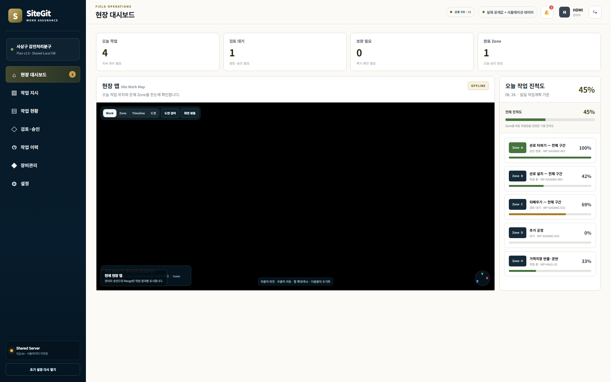
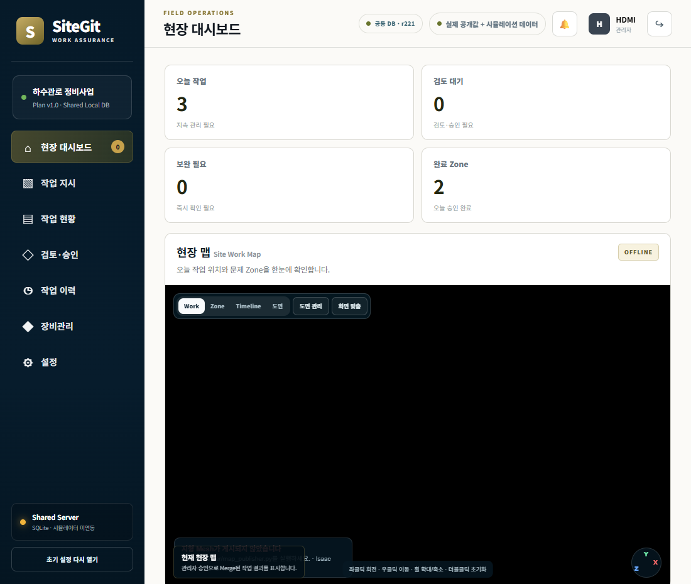
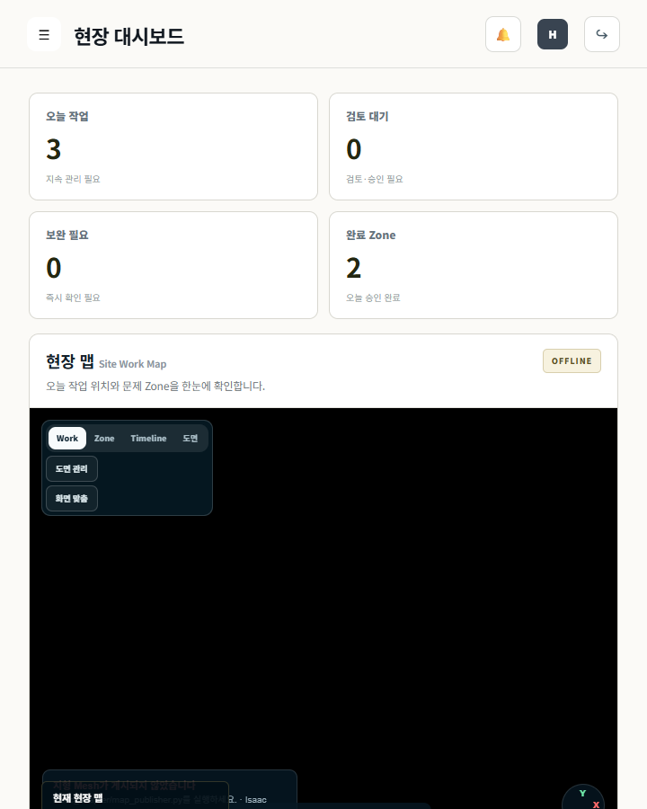
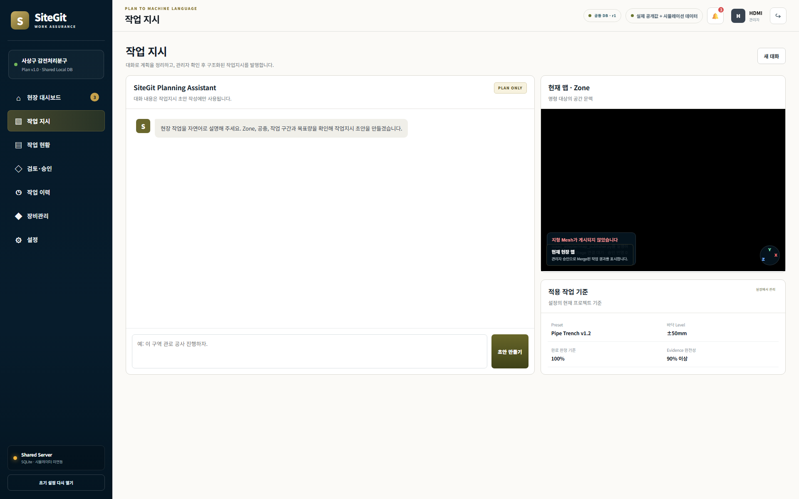
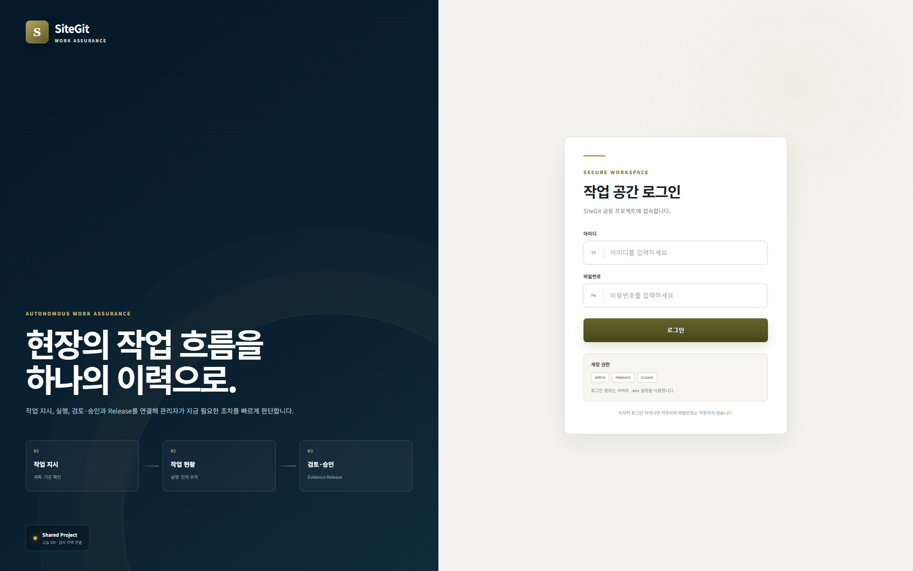

현장 정보의 디지털화
BIM, 설계, 측량, 공정과 현장 상태가 디지털 데이터로 쌓입니다.
CONSTRUCTION WORK HANDOFF INTERFACE
현장의 언어와 자율화 장비의 실행을 잇는 인터페이스HD Hyundai Monitoring Interface
관리자는 장비의 언어를 배울 필요가 없습니다. 오늘의 작업을 현장의 언어로 지시하면 SiteGit이 실행 가능한 Work Package로 바꾸고, 장비가 남긴 결과를 Evidence와 Commit으로 연결합니다.



WHY SITEGIT
두 영역이 함께 발전할수록 “무엇을 수행했고, 무엇을 근거로 완료를 승인할 것인가”가 더 중요해집니다.
BIM, 설계, 측량, 공정과 현장 상태가 디지털 데이터로 쌓입니다.
장비는 Machine Guidance와 부분 자율화를 통해 더 많은 실행을 스스로 수행합니다.
계획과 실행 사이, 장비의 결과와 관리자의 승인 사이에는 여전히 Handoff가 필요합니다.
사람은 작업을 정의하고, 장비는 실행하며, SiteGit은 그 사이의 상태와 근거를 잇습니다.
WHY DIFFERENT
SiteGit의 차이는 모니터링 화면의 수가 아니라, 작업이 다음 단계로 넘어가는 기준을 만든다는 데 있습니다.
FROM LOGGING TO IMPROVEMENT
기존 시스템이 수집한 데이터를 관리자가 모아 판단했다면, SiteGit에서는 작업을 수행한 개별 장비가 결과와 근거를 직접 생성합니다. SiteGit은 그 데이터를 계획과 비교해 문제를 찾고, 보완과 재검증을 거쳐 개선된 상태를 다음 작업의 기준으로 남깁니다.
위치, 작업량, 결과와 Evidence를 수행 장비가 직접 반환합니다.
계획·완료 기준과 실제 결과의 차이를 확인 가능한 Conflict로 만듭니다.
문제 구간과 원인에 맞는 보완 Work Package를 분기해 다시 실행합니다.
재검증된 결과를 승인하고 다음 작업과 향후 계획의 기준으로 남깁니다.
HOW SITEGIT WORKS
관리자가 범위와 목표를 현장의 언어로 지시합니다.
작업 범위·기준·Constraint·투입 장비를 구조화합니다.
여러 장비가 하나의 현장 작업을 수행합니다.
계획 대비 결과와 완료 판단 근거를 반환합니다.
승인하거나 보완 후 재검토를 요청합니다.
승인된 결과를 기록하고 다음 공정을 엽니다.
01 · INSTRUCT
LLM 대화창에서 현재 맵과 Zone, 완료·승인 기준을 함께 보며 작업을 요청합니다. SiteGit이 구조화된 작업 지시를 만들고 발행 전 누락 조건을 검사합니다.

02 · EXECUTE
관리자는 여러 장비를 일일이 제어하는 대신, Zone별 당일 작업의 상태와 결과를 확인합니다. Isaac 미연동 시에는 임의 결과 없이 OFFLINE 상태를 표시합니다.
03 · VERIFY
작업 범위, 계획 대비 결과, Evidence와 Conflict를 한 번에 검토합니다. 시스템이 완료를 대신 결정하지 않고 관리자가 승인 또는 재검토를 선택합니다.
04 · COMMIT
작업 지시부터 보완, 재검증, 관리자 승인과 다음 공정 Release까지 시간순으로 연결합니다. 보완 Work Package는 Git의 브랜치처럼 추적됩니다.
작업 시작Zone B · WP-SASANG-B01
Conflict · 보완 작업 발행완료 기준 미달
재검증 통과Evidence 재수신
관리자 승인 · Commit다음 공정 READY
PRODUCT TOUR
로그인부터 현장 대시보드, 작업 지시, 작업 현황과 장비관리까지 SiteGit으로 이어지는 현장 운영의 주요 흐름을 확인할 수 있습니다.

SITEGIT · WORK HANDOFF
SiteGit은 사람의 지시, 장비의 실행, 결과의 근거와 관리자의 승인을 하나의 이력으로 연결합니다.
제품 화면 다시 보기 ↑